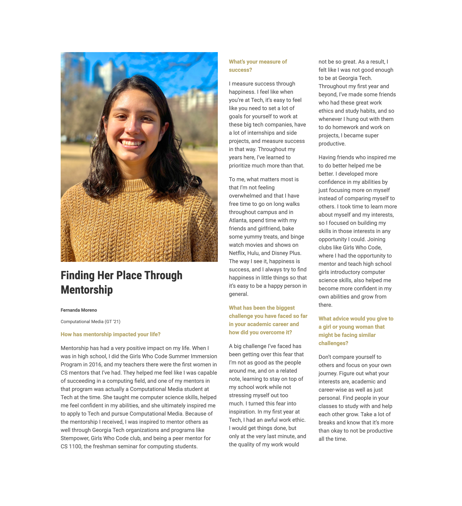

Toggle navigation
Features
Photography
Videography
Design
Code
Home
Features 📰
College of Computing Women's History Month

College of Computing Cohort Mentor Spotlight
Computational Media Website Featured Student
Back to top